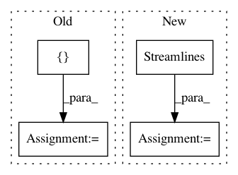

15fbbc27a84244c8ca283b1578931701f00f6370,dipy/tracking/tests/test_utils.py,,test_cluster_confidence,#,45
Before Change
def test_cluster_confidence():
// two identical streamlines should raise an error
mysl = np.array([np.arange(10)] * 3).T
test_streamlines = Streamlines([mysl]).append([mysl])
assert_raises(ValueError, cluster_confidence, test_streamlines)
// 3 offset collinear streamlines
test_streamlines = Streamlines([mysl]).append([mysl+1]).append([mysl+2])
After Change
def test_cluster_confidence():
// two identical streamlines should raise an error
mysl = np.array([np.arange(10)] * 3).T
test_streamlines = Streamlines().append(
mysl, cache_build=True).append(mysl).finalize_append()
assert_raises(ValueError, cluster_confidence, test_streamlines)
// 3 offset collinear streamlines
test_streamlines = Streamlines().append([mysl], cache_build=True).append(
In pattern: SUPERPATTERN
Frequency: 3
Non-data size: 4
Instances
Project Name: nipy/dipy
Commit Name: 15fbbc27a84244c8ca283b1578931701f00f6370
Time: 2018-09-09
Author: Kesshi.Jordan@ucsf.edu
File Name: dipy/tracking/tests/test_utils.py
Class Name:
Method Name: test_cluster_confidence
Project Name: nipy/dipy
Commit Name: 72edd97299bd73f2f4541de39aded37e543b5e22
Time: 2017-10-07
Author: garyfallidis@gmail.com
File Name: dipy/io/dpy.py
Class Name: Dpy
Method Name: read_tracksi
Project Name: nipy/dipy
Commit Name: 72edd97299bd73f2f4541de39aded37e543b5e22
Time: 2017-10-07
Author: garyfallidis@gmail.com
File Name: dipy/io/dpy.py
Class Name: Dpy
Method Name: read_tracks